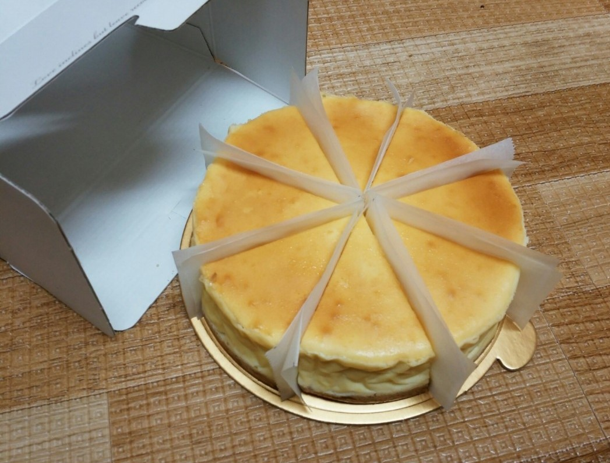
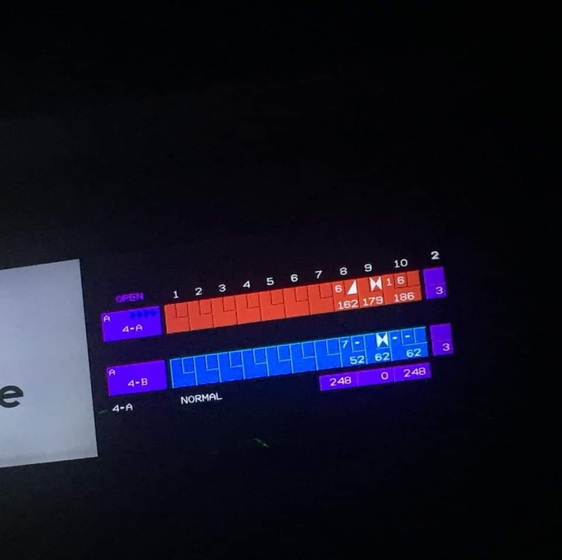
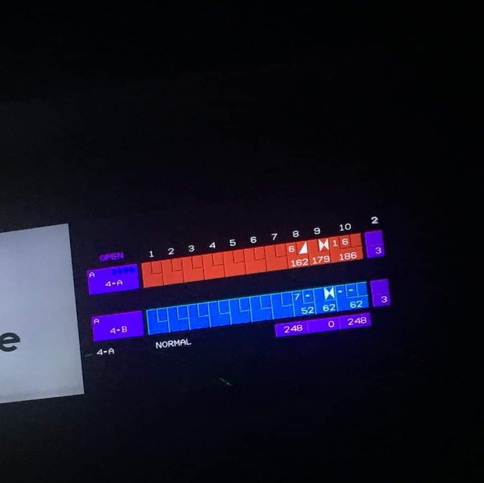

About Me
LEE SEUNG YEON
마카롱을 참좋아합니다. 마카롱 좋아하시는 분들은 교대역 어스마카롱 꼭 가보세요.. 인생마카롱 👍
My Photo

위에서 말한 빵 중 제일 인기 좋았던 치즈케이크 ! 친구들이랑 가족들이 맛있게 먹어줄 때 제일 뿌듯합니다.. 🥰
볼링 186점이 나왔어요 ! 물론 뽀록입니다 ...
마카롱을 참좋아합니다. 마카롱 좋아하시는 분들은 교대역 어스마카롱 꼭 가보세요.. 인생마카롱 👍
위에서 말한 빵 중 제일 인기 좋았던 치즈케이크 ! 친구들이랑 가족들이 맛있게 먹어줄 때 제일 뿌듯합니다.. 🥰
볼링 186점이 나왔어요 ! 물론 뽀록입니다 ...